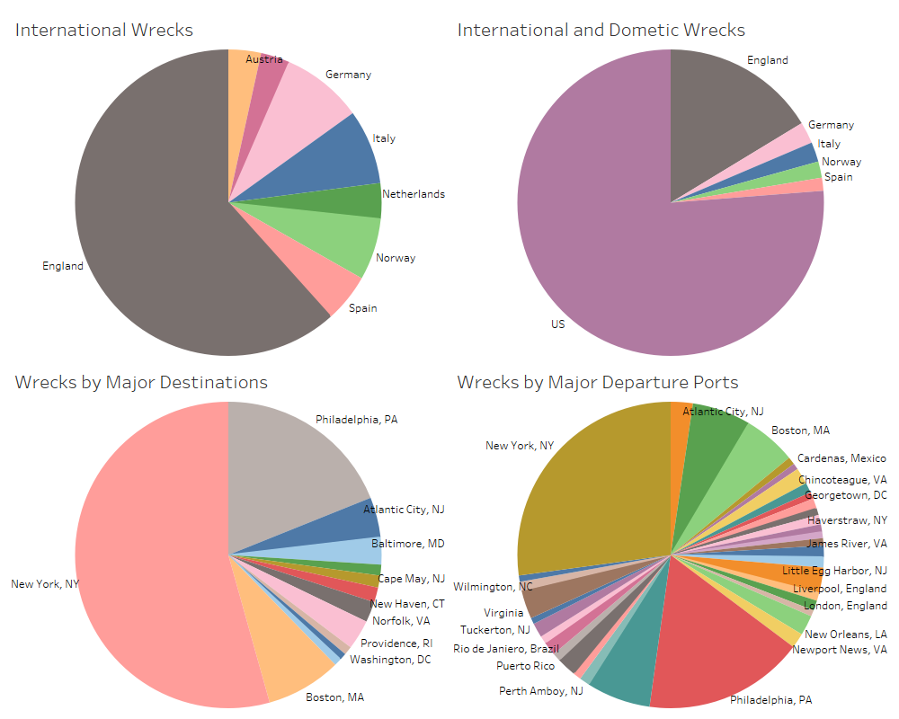

Our project focuses on a data spike that occurred between 1850-1900. A span of 50 years where shipwrecks dramatically increased, to explain this, we dove into the surrounding history around these shipwrecks during this period to find any possible outliers or anomalies that inadvertently contributed to this peak in shipwrecks.The overview of our project focuses on the state of technology and globalization during this history, focusing on the history relating to the evolution of ships during this time period.The rapid advancement in ship technologies initially had a detrimental effect on ship safety causing a disproportionate increase of shipwrecks in the post Civil War United States. These technologies include a change in materials used for constructing ships, design of ships, increasing evolution of composite engines, and increased productions of ships as well. This data is relevant to our argument because using different software technology, we can create data visualizations based on this data set to show the historic evolution and relevance of shipwrecks. The advancement in ship design and infrastructure during the 19th century had a dramatic increase in shipwrecks observed off the New Jersey coast in the second half of the 19th century.
For our sources, we relied on the Dawlish Chronicles, Life At Sea In Merchant Service. This article uses excerpts from the book Wreck of the Copeland at South Shields. Written and published by John Newington Carter in 1861. Carter provides a profound insight into the impact that ship designs had on seamen during the 19th century. The articles illustrated the history of sea merchants' lives during the 19th century as well as describing integral failures within ships and what caused so many shipwrecks during this time. Our other primary source was Historic England, Ships, and Boats: 1840-1950, written by the English Heritage using excerpts from the author, David Noton. This article was published in 2012 and dove into the evolution of contemporary ship design. Our data stems from the New Jersey Maritime Museum's data table, along with a collection of shipwrecks (Onshore and offshore) within the past 300 years. These contributions are somewhat successful because they implement American history as well as the ever expansion of shipbuilding technologies during this time. The scholars also try to conclude an effect on the people associated with the shipwrecks. To elaborate, the people that would use ships as a way to travel between countries and their outlook on ships during these different eras in time. Some argued that no one dared to enter a ship, especially merchants during the 19th century. "The situation was made worse still by the fact that once a seaman had signed on for a voyage – which on occasion poverty might force him to do without having first seen the ship itself – refusal to board could result in criminal prosecution and imprisonment with hard labor, typically for twelve weeks." (The Dawlish Chronicles, 2017) The fear of traveling provoked an increase in imprisonment as well because most seamen would refuse to travel by sea and face prison because they knew just how dangerous traversing waters with these ships were.
Some contradictions within the literature that exist were between the two scholarly articles about the relationship between ship design and safety. One author (David Noton) argues that ship design increased the safety of ships and enforced safety regulations during the early 19th century, while Carter argues that these designs and regulations were not implemented until almost the 20th century. This absence creates a disconnect between the authenticity of this history. However, after critiquing multiple sources, it can be incorporated in the fact that these regulations did not take place until the 1890s (Dawlish Chronicles, 2017) With this, we took away that these authors implement factual historical events, we just made the association between them. We realized the correspondence between the two is paramount in understanding the causes of shipwrecks and what caused their numbers to fluctuate throughout time. What questions need to be answered is how this peak affects shipwrecks as a whole? What were shipbuilding technologies used for safety rather than speed? Do these implementations lead up to the safety regulations being implemented? Or instead, another increase in ship speed and the overlooked safety regulations that should have been put in place? If safety regulations were heavily enforced before the start of the 19th century, would the data have spiked so much, or even at all? The answers to these questions would help us further understand the overall connection and significance of these shipwrecks, and what effect they had on human life surrounding them not just on sea, but people around the world. People that rely on ships for traveling, what were their mindsets and thoughts of sea travel at this time? Was it safe? Or too dangerous to even attempt?
Throughout this period, technological changes were imminent and increasing at a rather exponential rate. The ship design and engine evolution were amid a breakthrough since the 1700s, and these changes led to faster ships. However, one key point to take away from this is that because these ship designers and engineers were so focused on ship speeds rather than higher aggregate features and safety implementations within the ships, this increased the probability of a shipwreck. When considering the blockade runner ships, high powered composite engine ships that were designed solely for transporting supplies to the confederate armies during the civil war off the east coast, later on, however, to avoid detection, these ships would face dangerous or even deadly scenarios by traversing through the dense fog at night without lights on to avoid detection from union soldiers. Another constituent that played a rather large part in the increase of shipwrecks was the fact that safety statutes had not yet been fulfilled for ships. Instead, ship captains would find any way around safety specifications knowing they were not put into law yet. These encompassing events caused concern for the safety of ships because most of the ships in this period were very feeble, made of rotting wood (Dawlish Chronicles, 2017). These conditions would indeed cause pathogens that led to deadly diseases aboard these ships, further exacerbating the dangerous trips. Lastly, we would like to help others understand the history surrounding these shipwrecks, and that there is much more to data than meets the eye, with provocative research, we can conclude that these shipwrecks changed people's views on sea travel during the time, and we would like to express to the audience the real significance of these wrecks.
To start, globalization (an integration of cultures and economies across geographic borders) was a significant constituent to the overall rise in shipwrecks. Globalization started to take off around the late 19th century as the cost of transportation was reduced, and mass production began to take off due to the surrounding effects of the industrial revolution. This increase in production and decrease in price of transportation for ships led to an exponential increase in the rise of ship manufacturing as well as the implementations of technological advancements being applied to these ships. During the early 19th century, composite engines were already being blueprinted and designed, ready for the new era of shipping technologies. These engines started being put in place and designed so rapidly in anticipation of globalization ((Yang, Y., Park, C., Lee, K. et al., A study on the preliminary ship design method using a deterministic approach and probabilistic approach including hull form. 2007). These factors were paramount during this time because it would give them an advantage in trading. As these economic tensions started to increase overtime towards the latter half of the 19th century, various countries started to increase the mass production of ships.
This is where the increase of shipwrecks begins, technological advancements, mass production, and an abundance of structurally failing ships. These are all factors that played various positive roles during this era but led to negative externalities to stem from this. These effects were not intentional by all means, but they were overlooked, not scrutinized, and this led to a vast increase in shipwrecks. The factors all played a major contributional part in the increase in shipwrecks due to an absence of safety policies from long battles of the legislature, and it was not until shipwrecks peaked their highest in two centuries that they finally implemented mandatory safety laws. Mass production led to a substantial increase in ship production, leading to faulty designs because these speeds of production did not require inspections of built ships. They were merely deemed seaworthy. As well as an increase of mass production, the abundance of already failed ships were scattered across British coastal waters and the east coast of the U.S. These ships sunk not because of environmental impacts or geographical hazards, but just because these ships were already rotting out and were far from seaworthy.
Technological advancements in composite engines were crucial in terms of economic growth for countries, but this overwhelming increase affected the quality of ships. (Yang, Y., Park, C., Lee, K. et al., A study on the preliminary ship design method using a deterministic approach and probabilistic approach including hull form. 2007) Engineers were so focused on making ships faster for trade that they overlooked any safety statutes that would even remotely increase the integral features of these ships. "imposition of statutory safety requirements. The most notable was to be the "Plimsoll Line," still carried on ships' hulls, which provided visual confirmation that the ship was not over-laden. Legislation was one thing, enforcement of compliance was another, and a battle still lay ahead." (Dawlish Chronicles, 2017). These implementations were fought over for almost 3 decades. Money was so far rooted within the minds of traders that they would find loopholes around safety regulations to trade with their structurally failing ships. These ships included integral features that were in dire need of repairs yet were never fixed due to a scarcity of financial well being for most ship merchants and traders during this time period. The conditions of ships were so poor that "refusal to board could result in criminal prosecution and imprisonment with hard labor, typically for twelve weeks. In the 1850s, a British prison-inspector reported that three-quarters of all prisoners in jails in England's south-west were such seamen. Their crime had been to refuse to sail on vessels they believed to be unseaworthy or which were inadequately crewed." (Dawlish Chronicles, 2017) This infers that safety implementations were battled and argued over for years due to the rise of globalization and how it blinded those by a future of wealth when they had a presence of unseaworthy vessels. This led to an increase in shipwrecks “The number of designated vessels is small but with some 37,000 known wreck sites and recorded ship losses in the English Territorial Sea (which extends up to 12 nautical miles from the English coast)”. (English Heritage, 2012) Due to these vessels traversing dangerous waters, ships sank somewhere along the east coast of New Jersey near the Atlantic due to the period that most supplies were traded between New Jersey ports and British ports alike (Houghton Mifflin Company “The International Geographic Encyclopedia and Atlas” 1979)
An abundance of structurally failing ships (known as coffin ships), were vessels that were falling apart, rotting, and deemed unsafe to travel the seas. Meaning that they were doomed to sink if they traversed any open body of water. Just off of one port near the british colonies, "411 vessels, many small, sank around the British coast, with the loss of 506 lives. Bad seamanship and extreme weather was not responsible in many – perhaps ever a majority – of cases and ships frequently broke up or fell apart for the simple reason that they were already rotten and worn-out." (Dawlish Chronicles, 2017) This was again because yes, safety implementations did exist, but because they were not written into law or even mandated, they were largely ignored. "Standards for structural integrity and limits on loading had indeed been established as early as 1835 by Lloyd's Register, and compliance was a prerequisite for insurance by reputable entities associated with Lloyds. There was, however, no legal requirement to meet such standards". (Dawlish Chronicles, 2017) These created loopholes for sea merchants and ship captains to follow to avoid such implementations. These decisions led to an increase in shipwrecks because merchants would overload these already failing ships so much that they would not ever stand a chance even against the severe first storm when traversing open waters. "loaded them so heavily that they were frequently incapable of surviving the first serious storm they would encounter." (Dawlish Chronicles, 2017).
Mass production cohesively acted with the rise of shipwrecks. As engineers and traders collaborated to increase production speeds and capacities of ships, they often overlooked safety in pursuit of financial well being. This created a rise in wrecks due mostly in part to the drive for money to reach the heightened rise of globalization during this era. This created an impeccable increase in lives lost at sea due to the constant failures of ships being able to traverse open waters because of mechanical failures or ships simply just not being able to support the weight of goods being transported. “These large, fast, three-masted sailing ships were employed on Indian trade via the Cape of Good Hope, though none are known to survive” (English Heritage, 2012) This increase in ship production affected the economy positively in effect from globalization but had an inverse relationship to the lives lost at sea in part of this. The rise in globalization filled the minds of sea merchants with greed over safety, and often overburdened ships to the point where they would sink through the first storm at sea.
These factors played a significant role in the rise of shipwrecks off the east coast. Engine advancements and other technological advancements led to an increase in ship speed to traverse open waters faster. Increased production led to an abundance of ships being available for merchants, however containing faults within that led to safety concerns as more and more ships began to sink off the east coast. An overabundance of structurally failing ships caused concern for merchants as they learned about the increase of shipwrecks due to the overabundance of supplies being loaded on ships to attempt to travel across open waters. Many would risk prison instead of boarding these ships. All these factors were caused by a substantial increase of globalization for the first time, and because of this, many lost their lives to attempt a risk vs. rewards scenario, where they would choose to take the risk for a hopeful gain, but in the end, lose. This led to a substantial increase in shipwrecks as a side effect of globalization as well as safety statutes being overlooked for nearly a century. Economic well being often constitutes greed, and in the end, we lose time and time again.
Check Out Our Maps »